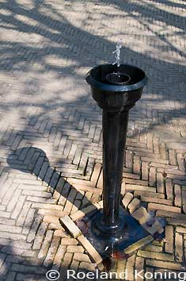
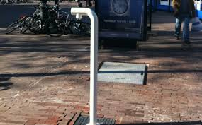
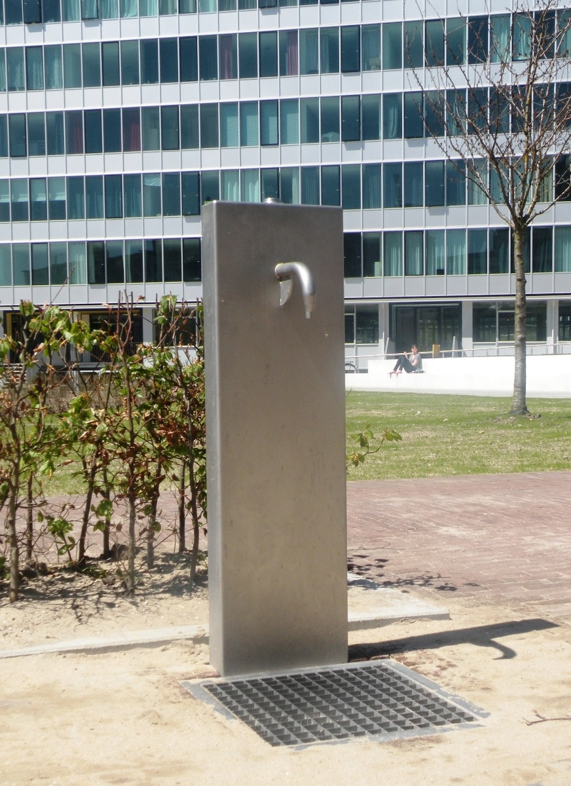
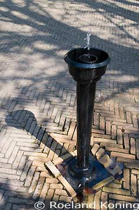
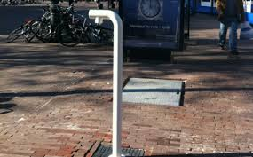
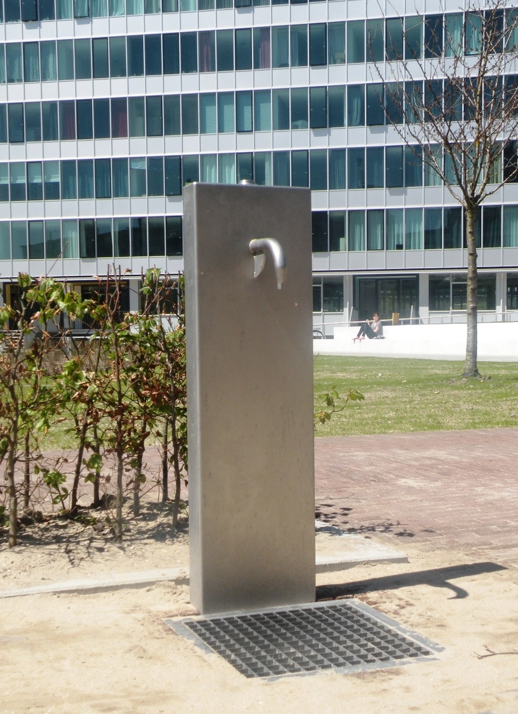

Fresh water to tap in Amsterdam
Buying bottled water is lame and bad for the environment, but staying hydrated and refreshed is cool and good for you.
Bottled water is sold in stunning numbers: in Amsterdam 21.7m liters water was sold in bottles in 2014
(Source: AMS Instituut voor stadsonderzoek)
Luckily there are public water taps all around Amsterdam (courtesy of Waternet and Join the Pipe ) offering fresh sweet water to fill your bottle and or to sip from.
In case you doubt, if the water is safe to drink: the quality of Dutch drinking water was top rated by a comparative reserach published in Science Magazine 2016/02 Vol. 351!
As no chlorine is used, the water actually tastes sweet. If you want to find out how this is achieved, vist Science Center Nemo where an interactive display explains all the steps.
The drinkwater fountains tend to blend so well into the city, you might have trouble finding them.
So this site gives you an overview where to find the nearest water fountain to quench your thirst.